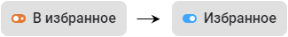
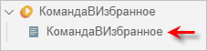

Типы встроенного языка и свойства элемента проекта вида «ПереключаемаяКоманда»
Переключаемая команда выполняет алгоритм на встроенном языке и имеет два состояния: активное и неактивное. В каждом из этих состояний она отображается в виде картинки и заголовка, которые показывают состояние команды.

После того, как вы добавили в проект переключаемую команду и дали ей имя, «1С:Кабинет сотрудника» создаст один тип встроенного языка. Имя этого типа совпадает с именем вашей переключаемой команды.
Например, если в проекте есть переключаемая команда КомандаВИзбранное, то будет создан тип КомандаВИзбранное. В общем случае имя этого типа выглядит следующим образом: <ИмяПереключаемойКоманды>.
Тип <ИмяПереключаемойКоманды>
Этот тип встроенного языка доступен на клиенте.
Он не имеет конструктора и имеет единственный объект, обращение к которому выполняется по имени типа:
// Получить обычную команду «КомандаВИзбранное»
пер КомандаИзбранное = КомандаВИзбранноеМодуль переключаемой команды
В проекте модуль, расширяющий тип <ИмяПереключаемойКоманды>, называется модулем переключаемой команды. Он исполняется на клиенте.

В этом модуле вы можете обработать событие нажатия на команду.
Иерархия наследования
- Команда (абстрактный)
Свойства элемента проекта
- ИзображениеАктивного
- Ссылка на ресурс картинки, которая будет показана для активной команды. Пример
YAML-файла:
ВидЭлемента: ПереключаемаяКоманда ОбластьВидимости: Подсистема Ид: cb1c56ba-0f64-40da-a1b1-d89689c8b23a Имя: МояПереключаемаяКоманда ПредставлениеАктивного: Избранное ПредставлениеНеактивного: В избранное ИзображениеАктивного: Action-on.svg ИзображениеНеактивного: Action-off.svg Обработчик: ОбработчикКоманды - ИзображениеНеактивного
- Ссылка на ресурс картинки, которая будет показана для неактивной команды. Пример
YAML-файла:
ВидЭлемента: ПереключаемаяКоманда ОбластьВидимости: Подсистема Ид: cb1c56ba-0f64-40da-a1b1-d89689c8b23a Имя: МояПереключаемаяКоманда ПредставлениеАктивного: Избранное ПредставлениеНеактивного: В избранное ИзображениеАктивного: Action-on.svg ИзображениеНеактивного: Action-off.svg Обработчик: ОбработчикКоманды - Обработчик
- Имя метода, который будет вызван для выполнения команды. Пример
YAML-файла:
ВидЭлемента: ПереключаемаяКоманда ОбластьВидимости: Подсистема Ид: cb1c56ba-0f64-40da-a1b1-d89689c8b23a Имя: МояПереключаемаяКоманда ПредставлениеАктивного: Избранное ПредставлениеНеактивного: В избранное ИзображениеАктивного: Action-on.svg ИзображениеНеактивного: Action-off.svg Обработчик: ОбработчикКоманды - ПредставлениеАктивного
- Строка, которая будет показана как заголовок активной команды. Пример
YAML-файла:
ВидЭлемента: ПереключаемаяКоманда ОбластьВидимости: Подсистема Ид: cb1c56ba-0f64-40da-a1b1-d89689c8b23a Имя: МояПереключаемаяКоманда ПредставлениеАктивного: Избранное ПредставлениеНеактивного: В избранное ИзображениеАктивного: Action-on.svg ИзображениеНеактивного: Action-off.svg Обработчик: ОбработчикКоманды - ПредставлениеНеактивного
- Строка, которая будет показана как заголовок неактивной команды. Пример
YAML-файла:
ВидЭлемента: ПереключаемаяКоманда ОбластьВидимости: Подсистема Ид: cb1c56ba-0f64-40da-a1b1-d89689c8b23a Имя: МояПереключаемаяКоманда ПредставлениеАктивного: Избранное ПредставлениеНеактивного: В избранное ИзображениеАктивного: Action-on.svg ИзображениеНеактивного: Action-off.svg Обработчик: ОбработчикКоманды